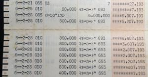
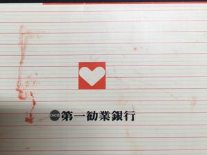
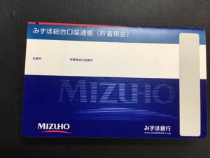

うるがいの話 ある日
最新: 腰痛峠を越えるうるがいとは 前提知識です
カニの画像をクリックすると『うるがいの話』サイトを表示します|
|
うるがい(ｳﾙｶﾞｲ urugai)とは、『もずくがに』の名前でとても大きくなります。 |
|---|---|
|
|
たながー（ﾀﾅｶﾞｰtanagaa）とは手長えびのことで、何種類かあり大きいのは車 エビぐらいになります。 |

|
ぶながー(bunagaa)とは、赤い髪の毛、赤い身体、そして身長は１ｍ２０ｃｍ ぐらい、川の蟹を食べているの目撃された。場所は沖縄県国頭郡大宜味村のと ある村僕の隣近所に住んでいる爺さんから、聞いた話です。 |
2021年09月24日 (金）腰痛峠を越える
16:11
  
昨日の夜、腰痛の痛みが引いていくのが分かった。完治まではまだ少しかかる
と思うが。独学の気功または靈氣の効果があるかもしれないと思う今日この頃
である。社会人になって作らされた銀行口座が、第一勧業銀行だった。給与振
り込みの口座である。一度に引き出したお札は６百万、住宅購入の支払いに使
った時で、アタッシュケースに札束を入れて支払いのため、琉銀本店まで歩い
て移動した。怖かった！、第一勧業銀行は２０００年（平成１２年）にみずほ
銀行に変わる、近頃はシステムの障害で大変のようだ、とうとう、おととい金
融庁がシステム運営を事実上管理することになった。現役の時、会社の人材育
成の参考になる情報を捜したとき、金融情報システム白書にみずほ銀行の事例
があった（素晴らしいという前提で）、日経コンピュータには「ＭＩＮＯＲＩ
（みのり）」という巨額のシステム開発を令和元年７月に全面稼働させたとき
構築までのプロセスをベタ褒めだった。当時の関係者のお祈りが足りなかった
かも、ＪＡＸＡのはやぶさは、しっかりお祈りしていた。金融庁が管理すると
いうが、今のシステムは高度でかつ複雑で、かつ、グローバルで、そもそも障
害の背景は、単独メーカでなくいくつかのメーカーが関わる複合構成で、かつ
中枢システムを全面導入した後に担当の社員数を４割に減らしてという（フエ
イクか調べてはいないが）人材育成に問題が・・・、プロセスも大事だが結果
が優先する事例かな。みずほの通帳を解約しようと思っているが、ネットでも
コロナ禍は避けて下さいとあったので中断している。大型商業施設への土日の
休業要請を解除が急遽決まり、コドモの職場も営業ができるようになった。昨
日、家に来た無職の子供に、先週のさんさんとした金曜日の夜の話をすると８
時までの制限があるからと言っていた。制限が解除されればアッと言う間に人
で一杯になるよと言っていた。傷病手当金の手続きは、手続きに必要な心療内
科の先生の書き込みを、送られてきた両面の資料にそのまま記入してもらった
って、東京にある窓口に送り返したら、片面づつでないとダメとやりなしたと
のこと、もう一度手数料を支払って心療内科の先生に書いてもらって送り、返
事待ちと話した後、もう面倒くさいので止めたい！とグッチっていた。辞めた
らいいよ、と答える。東京の手続きしている部署の指示が、適切でないからこ
う言う事になっている、そもそも、心療内科にいっている心に問題のある人を
相手にしている配慮が全くないと少し怒った。コロナ感染拡大防止対策協力金
でも同じ事が起きているそうだよ、『もらえる、と思って申請したら提出した
申請書に不備があると何度も申請を行うが、あとは諦める』と子供を慰める。
ん、慰めになっているのかな。